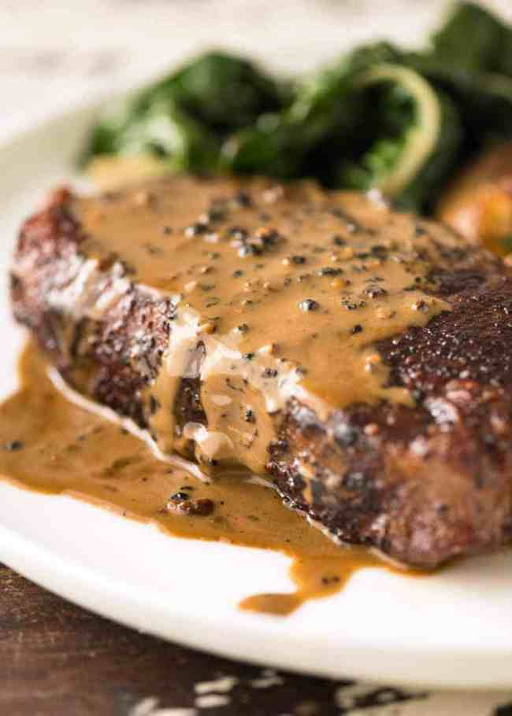

Pepper steak

Steak with Creamy Peppercorn Sauce
One of my favourite steak sauces - a creamy Peppercorn
Sauce made with brandy or cognac, beef broth, cream and
plenty of crushed peppercorns.
steakhouse classic, this creamy pepper sauce with juicy
steak is a match made in heaven. And it's made with just 4 ingredients. Four.
FOUR!!!
Ingredients
- 2 300g/10oz New York Strip / Porterhouse steaks (or other of choice, Note 1)
- Salt and pepper
- tbsp vegetable oil
Sauce:
- 1/3 cup (85 ml) brandy or cognac
- 3/4 cup (185 ml) beef broth/stock , low sodium
- 1/2 cup (125 ml) cream , heavy/thickened
- 2 - 3 tsp coarsely crushed whole black peppercorns (or canned
green peppercorns, drained) (Note 4)
Steps
- Take the steaks out of the fridge 20 minutes before planning to cook.
- Crush the pepper using a rolling pin, mortar and pestle or the side of a
hardy knife.
Steaks
- Just before cooking, sprinkle both
sides of steak generously with salt and black pepper.
- Heat oil in a skillet over high heat until smoking.
- Add steaks and cook the first side for 2 minutes until it has a great
crust, then flip and cook the other side for 2 minutes (for medium rare).
- Stack the steaks on top of each other, then use tongs to sear the fat strip.
- Transfer to plate, cover loosely with foil to rest while you make the sauce.
Sauce:
- Add brandy or cognac into the same skillet and let it simmer rapidly, scraping the bottom of the pan, until
it has mostly reduced and you can no longer smell the harsh alcohol smell
(~1 min).
- Add broth, bring to simmer and let it simmer rapidly for 2 to 3 minutes or until it reduces by
half.
- Turn heat down to medium. Add cream and pepper, stir, then simmer for 1 1/2 to 2 minutes until it thickens (do not let it
boil rapidly).
- Taste sauce, adjust salt (and pepper!) to taste.
- Transfer steaks to warmed serving plates. Spoon over sauce. Serve immediately! Pictured with Crispy Smashed Potatoes and Garlic
Spinach. (Note 6)